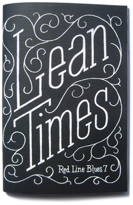

Available now in the online store.
Red Line Blues 7: Lean Times
Winter 2010
76 pages
5" x 7.5"
First edition of 500
Chall Gray — What We Became
Luis Jaramillo — The Doctor’s Wife
Eliza Kelley — We Live Now/Crystal Aspersoria
Dan Cullinane — Sunset to the End of the World
Cheryl Rogers Resetarits — Charleston
David Menzies — The Way To Views
Kate Falvey — Foodstuffs
Jasmine Hunter — How To Make an Easy Buck
Charles Farrell — Golden Triangle/Cowgirl Reds/Modern
Blake Kimzey — Torch
Albert Podell — Milk Money
Gary Hawkins — Plasma Center/Kinetic/The Slippery Art
Jessie
Eller-Isaacs — Linda
Jessica Marr — Reflections/Save Us/Working World
John Solensten — A Hunk of Punk
Laura Cronk — Having Been Bitten